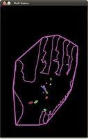

This tutorial code’s is shown lines below. You can also download it from here
#include "opencv2/highgui.hpp"
#include "opencv2/imgproc.hpp"
#include <iostream>
#include <stdio.h>
#include <stdlib.h>
using namespace cv;
using namespace std;
Mat src; Mat src_gray;
int thresh = 100;
int max_thresh = 255;
RNG rng(12345);
/// Function header
void thresh_callback(int, void* );
/* @function main */
int main( int argc, char** argv )
{
/// Load source image and convert it to gray
src = imread( argv[1], 1 );
/// Convert image to gray and blur it
cvtColor( src, src_gray, COLOR_BGR2GRAY );
blur( src_gray, src_gray, Size(3,3) );
/// Create Window
char* source_window = "Source";
namedWindow( source_window, WINDOW_AUTOSIZE );
imshow( source_window, src );
createTrackbar( " Threshold:", "Source", &thresh, max_thresh, thresh_callback );
thresh_callback( 0, 0 );
waitKey(0);
return(0);
}
/* @function thresh_callback */
void thresh_callback(int, void* )
{
Mat src_copy = src.clone();
Mat threshold_output;
vector<vector<Point> > contours;
vector<Vec4i> hierarchy;
/// Detect edges using Threshold
threshold( src_gray, threshold_output, thresh, 255, THRESH_BINARY );
/// Find contours
findContours( threshold_output, contours, hierarchy, RETR_TREE, CHAIN_APPROX_SIMPLE, Point(0, 0) );
/// Find the convex hull object for each contour
vector<vector<Point> >hull( contours.size() );
for( int i = 0; i < contours.size(); i++ )
{ convexHull( Mat(contours[i]), hull[i], false ); }
/// Draw contours + hull results
Mat drawing = Mat::zeros( threshold_output.size(), CV_8UC3 );
for( int i = 0; i< contours.size(); i++ )
{
Scalar color = Scalar( rng.uniform(0, 255), rng.uniform(0,255), rng.uniform(0,255) );
drawContours( drawing, contours, i, color, 1, 8, vector<Vec4i>(), 0, Point() );
drawContours( drawing, hull, i, color, 1, 8, vector<Vec4i>(), 0, Point() );
}
/// Show in a window
namedWindow( "Hull demo", WINDOW_AUTOSIZE );
imshow( "Hull demo", drawing );
}
Here it is:
 |
 |